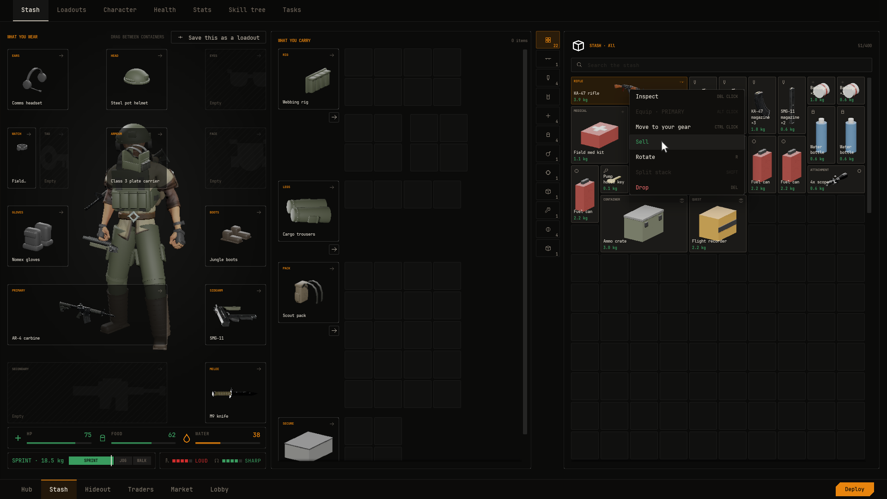
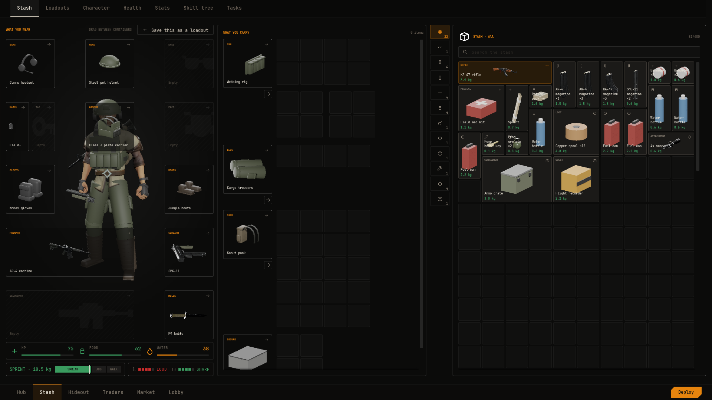
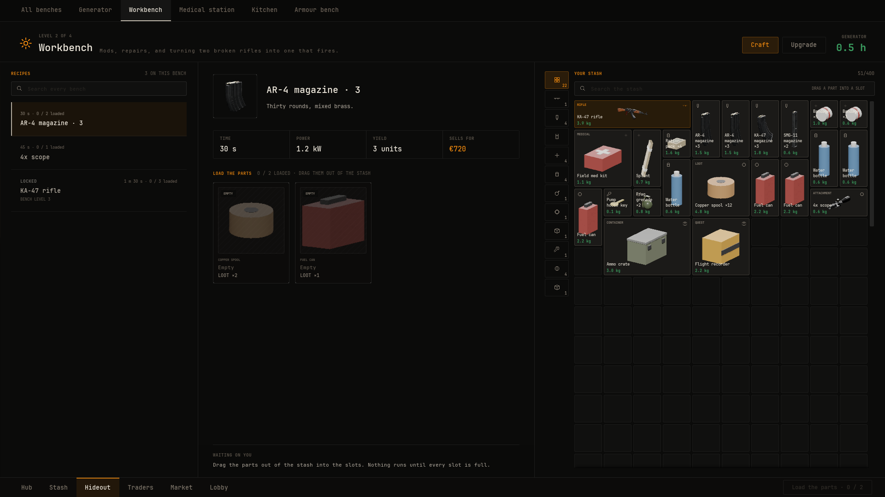

Blackline
The whole game UI.
Already built.#
Blackline is twenty-one screens on CommonUI, from the hub to the raid debrief, with the stash, raid inventory, traders, market, hideout crafting, health and raid HUD in between. You fill them with data assets, one asset per item, trader, task, station and raid map. Most of it needs no C++.

What you get#





See it filled first#
A fresh install has no game content in it. Screens that list items, traders or stations show a short empty state card until you add some. To see every screen working, get the free Blackline Demo. It comes in three downloads.
- BlacklineDemo-Win64.zip is a playable Windows build. Unzip it and run
BlacklineDemo.exe. - BlacklineDemo-Linux.zip is a playable Linux build. Unzip it and run
BlacklineDemo.sh. - BlacklineDemo-Project.zip is the Unreal project with all its Blueprints and data assets, ready to open with the plugin and copy from. Add the free FPS Weapon Bundle from Fab first, as Getting started explains.
The demo is a small playable raid loop. You pick a map, deploy, loot a crate and a body, extract, then craft, trade, heal and kit up at home. It is built only from Blueprints and data assets.
Start with a guide#
How it plugs into your game#
Screens read your content from data assets and your live game state from sources, such as a Blueprint component on the player. When the player presses something that changes the game, the screen raises a request your game can answer. The plugin answers the common ones itself, such as cash, crafting, healing and tasks, so a game can get far without writing any request code.
Know the limits#
- It is single player. The Inventory component does not replicate.
- The raid HUD's ammo readout shows the fitted magazine's capacity. It does not count shots.
The FAQ covers the rest.